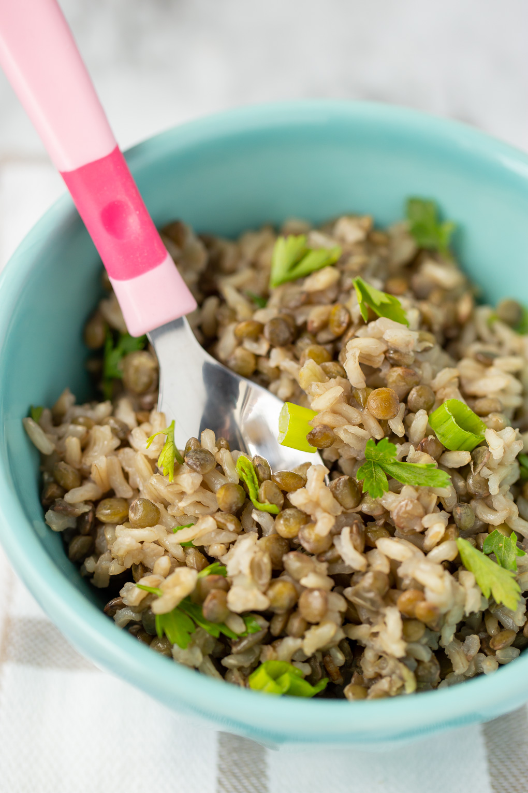

Lentils and Rice

Description
This lentil and rice dish is a simple meal using inexpensive ingredients.
Filling and nutrious, this meal packs fibre, protein, carbs, and fats into one
tasty dish!
Ingredients
- 4 cups of brown lentils
- 4 cups of white rice
- 1 onion, chopped (either Sweet or Red)
- 5 garlic cloves, chopped
- 3 tbsp of basil
- 1 tbsp of thyme
- 1 cup of kale, chopped
- 2 eggs
- Olive oil (as necessary)
- Tap Water (as necessary)
Steps
Lentils:
- Add lentils to large, 4 Litre pot
- Fill the pot about 2 inches from the top
- Set the pot on the burner to boil on HIGH
- Add the herbs and spices to the pot and stir
- Once the lentils have reached a rolling boil, turn down the heat to LOW
- Let lentils simmer for 12-15 minutes (depends if you prefer harder or softer lentils)
- Drain with a strainer and store in containers
Rice:
- Add rice to large, 4 litre pot
- Rinse and wash rice until water is reasonably clear
- Drain any leftover water from the washed rice
- Add 6 cups of water to the washed rice
- Set the pot on the burner to boil on HIGH
- When the pot starts to boil, turn the heat to LOW
- Let the rice simmer for 15 minutes
- Remove from heat
- Fluff rice with a fork
Mix:
- Put a large saucepan on the stovetop at MEDIUM-HIGH heat
- Once warm, add olive oil (use however much you prefer)
- Add chopped kale, onions, mushroom, and garlice
- Add 2 cups of cooked lentils
- Add 1-2 cups of cooked rice
- Add 1 egg
- Stir
- Once egg has cooked, add a small amount of olive oil to prevent dryness
- Transfer mixture to a bowl or plate, still leaving the saucepan at MEDIUM-HIGH heat
- Add 1 egg to the empty saucepan
- Scramble egg and add whatever spices you prefer
- Once egg is cooked, add to the cooked rice and lentil mixture
- Enjoy?
Back to the Top
Back to Home